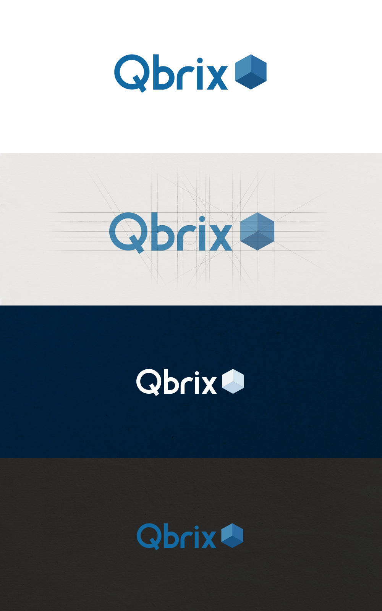
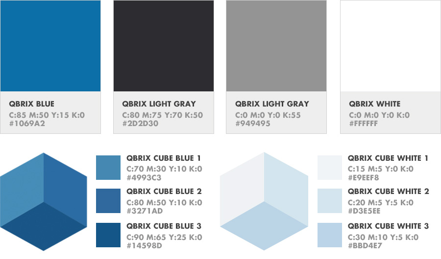
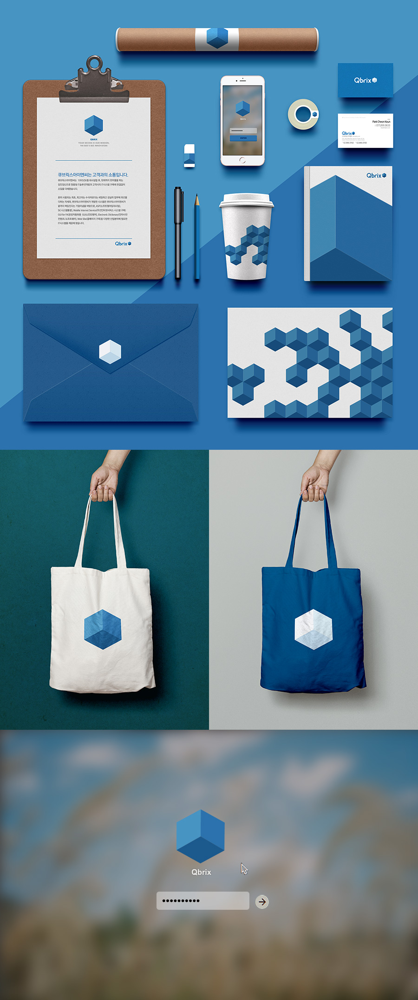

branding
Qbrix
IT 벤처기업 Qbirx의 CI design. Qbirx는 CUBE와 BRICKS의 합성어로 정육면체 모든면처럼 비즈니스와 커뮤니케이션 함을 의미함과 동시에 튼튼하고 단단한 기업을 의미합니다.
- type
- CI Design
- role
- desgin (100%)
- date
- march 2014
branding
IT 벤처기업 Qbirx의 CI design. Qbirx는 CUBE와 BRICKS의 합성어로 정육면체 모든면처럼 비즈니스와 커뮤니케이션 함을 의미함과 동시에 튼튼하고 단단한 기업을 의미합니다.
IT 벤처 기업인 Qbrix는 cube와 bricks의 합성어 입니다. 큐브와 브릭스가 뜻하는 단단한 정육면체에서 심볼 모티브로 착안하고 형상화하여 다양하고 단단한 기업이라는 의미를 내포하고 있습니다.
희망, 안정감, 신뢰를 상징하는 큐브릭스 블루 컬러로 고객의 성공을 최우선의 가치로 생각하는 기업의 이미지를 조화롭게 표현해 주었습니다.
큐브 심볼을 이용해 다양한 어플리케이션을 제작할 수 있습니다.
